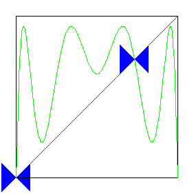
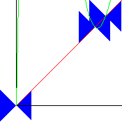
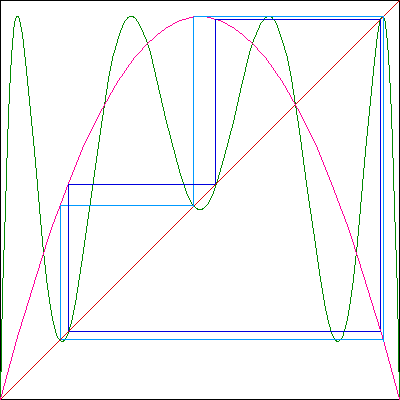

| A tangent bifurcation occurs when the
graph of L(x) crosses the diagonal as s increases. |
| The crossings occur where the
graph becomes tangent to the diagonal, hence the name tangent bifurcation. |
| As s continues to increase, the graph crosses the diagonal at two points, initially
nearby, but moving apart. |
| All this happens because as s increases, the
maxs of the graph of L(x) increase and the mins decrease. |
|
| For the graph of L3(x), three
lobes become tangent to the diagonal
at the same s-value, so this tangent bifurcation gives rise to six new fixed
points of L3(x), hence to two 3-cycles of L(x). See the left
picture. |
| Looking carefully at the
crossing, we see one of the new fixed points is stable (the one toward the extremum in
the lobe of the graph crossing there), the other is unstable. See the right
picture. |
|  |
 |
 |
| Click the animation to stop. |
|
Click the picture to animate. |
|
| The stable fixed points of
L3(x) constitute one 3-cycle (light blue below) of L(x), the unstable
fixed points another 3-cycle (dark blue). |
|  |